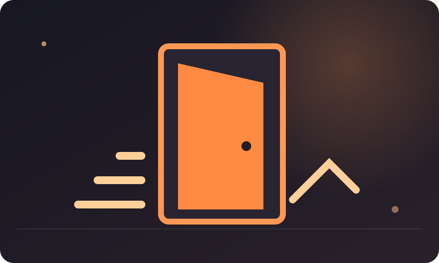

MOTIVACIÓN
Cómo empezar cuando no tienes ganas
Qué hacer cuando el problema no es terminar, sino atravesar esos primeros minutos en los que todo parece costar demasiado.

ESQUEMA VISUAL · MOTIVACION 2
La puerta de entrada: empezar pequeño
El objetivo de este momento no es terminar; es cruzar el umbral de inicio.
Hay tareas que no generan rechazo mientras están en la cabeza, pero se vuelven pesadas justo cuando toca empezar. El error habitual es discutir con uno mismo hasta sentir ganas. Esa conversación rara vez termina. Una alternativa más útil es diseñar un comienzo tan claro que no necesite una gran dosis de energía emocional.
El verdadero problema suele estar en el primer minuto
“Tengo que estudiar” no describe una acción. “Abrir el documento, escribir el título y resolver la primera pregunta” sí. Cuanto más abstracta es la intención, más decisiones quedan pendientes.
Antes de empezar, deja decidido qué objeto vas a tocar, dónde lo harás y cuál será la primera acción observable. El objetivo es que tu yo cansado no tenga que negociar el plan completo.
No confundas resistencia con incapacidad
Sentir resistencia no significa que no puedas hacer la tarea. Puede significar que anticipas aburrimiento, esfuerzo, incertidumbre o una recompensa lejana. Esa sensación es real, pero no siempre es una instrucción.
La excepción importa: si la tarea requiere una capacidad que todavía no tienes, no basta con “obligarte”. Necesitas aprendizaje, apoyo o una versión más sencilla.
La entrada de tres minutos
Prueba un inicio de tres minutos con una condición: debe contener trabajo real. Leer el título de una tarea no cuenta; escribir una frase, ordenar cinco datos, hacer un problema o preparar el material sí.
Cuando terminen los tres minutos, decide si continúas. No utilices el temporizador como una trampa para trabajar una hora; úsalo para reducir el tamaño de la puerta de entrada.
Prepara el escenario antes de necesitarlo
Si siempre empiezas desde cero, cada sesión exige demasiadas decisiones. Deja abierto el libro correcto, prepara una lista de tres pasos, coloca el teléfono fuera del alcance o escribe en una nota dónde continuarás mañana.
La preparación no es trabajo falso. Es una forma de trasladar decisiones desde el momento de menor energía hacia un momento en el que sí puedes tomarlas.
Caso: la tarea que lleva una semana abierta
Una persona tiene que entregar una propuesta y lleva siete días diciendo que la hará. No necesita “ponerse al día”; necesita atravesar el inicio. Define una primera versión deliberadamente imperfecta: escribir cinco ideas sin corregirlas. En veinte minutos tiene material que antes no existía. A partir de ahí puede editar.
El cambio clave fue separar generar de juzgar. Intentar hacer ambas cosas al mismo tiempo había convertido el comienzo en una prueba de talento.
Crea una regla para tus días sin ganas
Escribe una regla que pueda cumplirse incluso en un día mediocre: “cuando me siente, haré diez minutos de la tarea principal antes de abrir redes”, o “si no puedo completar la sesión, haré la versión mínima”.
Una buena regla no te promete sentirte bien. Te dice qué hacer cuando no te sientes bien.
Cuando el comienzo sigue dando resistencia
Si los tres minutos no funcionan, no concluyas que necesitas más fuerza de voluntad. Pregunta qué parte exacta del inicio sigue siendo desagradable. Puede que la tarea sea demasiado ambigua, que falte información, que tengas miedo a hacerlo mal o que estés intentando empezar en un momento de poca energía.
Haz una segunda reducción: en vez de “hacer la tarea”, prepara la pregunta que necesitas responder. En vez de “estudiar matemáticas”, identifica el ejercicio que no entiendes. En vez de “escribir el informe”, escribe las tres decisiones que el informe debe permitir tomar. A veces la mejor forma de empezar es definir mejor qué estás intentando hacer.
Si después de aclarar y reducir la tarea la resistencia continúa durante semanas, merece una revisión más seria. Quizá el objetivo no encaja, quizá necesitas aprender una habilidad previa o quizá existe un problema de salud, sueño o estrés que no se resuelve con técnicas de productividad. Un método útil también sabe cuándo dejar de insistir y mirar el contexto.
La diferencia entre empezar y prepararte eternamente
Preparar puede dar una sensación agradable de avance porque todavía no existe el riesgo de equivocarse. Puedes ordenar el escritorio, buscar otra aplicación, ver un tutorial más o diseñar un plan perfecto. Todo eso puede ser útil hasta cierto punto; después puede convertirse en otra forma de aplazamiento.
Pon un límite a la preparación. Por ejemplo: diez minutos para reunir materiales y después una acción que produzca un resultado. Si estás aprendiendo a programar, escribe código. Si estás preparando una presentación, redacta una diapositiva. Si estás organizando un proyecto, toma una decisión que cierre una incertidumbre.
El objetivo no es despreciar la preparación. Es distinguirla del trabajo principal. Una preparación buena reduce obstáculos; una preparación infinita evita que aparezca el momento en que debes comprobar si realmente puedes hacerlo.
Haz que el primer paso sea tan concreto que no necesites motivarte para descubrirlo.
DESCOMPONEDOR DE INICIO
Convierte una tarea pesada en el primer movimiento
La tarea debe quedar tan clara que puedas reconocer cuándo empezaste.
Tu comienzo aparecerá aquí.
Si la tarea sigue pareciendo imposible, puede que el primer paso todavía contenga varias decisiones. «Estudiar» puede dividirse en abrir el temario, elegir una pregunta y responderla sin consultar apuntes. «Ordenar» puede convertirse en despejar una sola superficie. La acción inicial debe ser concreta, no heroica.
COMPRUEBA LO QUE TE LLEVAS
Estas preguntas no buscan ponerte una nota. Sirven para comprobar si la idea central del artículo quedó clara y, sobre todo, para decidir qué hacer después.
1. ¿Qué hace útil a una primera acción?
2. ¿Para qué sirven los tres minutos?
3. ¿Qué debe hacer una buena regla para días difíciles?
¿Quieres llevar una idea a la práctica? Prueba el Reto de 7 días de IMPULSO o crea tu Ruta de crecimiento para convertir una reflexión en una acción concreta.
← VOLVER A IMPULSO